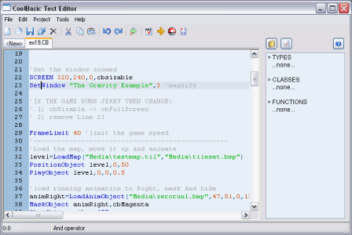
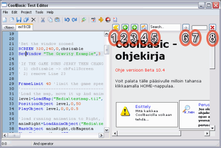
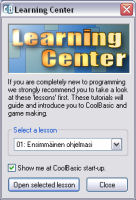
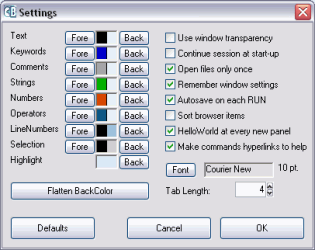
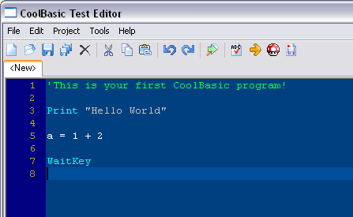

K‰yttˆliittym‰:

Ikkunan oikeassa litassa n‰et koodiselaimen. Oletuksellisesti se n‰ytt‰‰ funktiot, luokat ja tyypit. Koodiselaimen yl‰reunassa on seuraavat painikkeet:
Ensimm‰inen kuvake Listaa koodin funktiot, luokat ja tyypit Toinen kuvake Listaa koodin vakiot, muuttujat ja kirjanmerkit (label) Viimeinen kuvake Kysymysmerkki. Avaa manuaalin
Manuaali
T‰m‰ manuaali avautuu joko valikosta Help/Index, valikosta Help/Context tai painamalla F1. Jos painat F1 jonkun avainsanan (oletuksena sininen) kohdalla, ohje siirtyy kyseisen komennon oppaaseen.
Kuvan kohteiden selitykset:
1 Laajennuspainike. T‰m‰ nuoli laajentaa manuaalin koko ikkunaan. Manuaalia saattaa olla mukavampi lukea n‰in. Samasta painikkeesta saat palattua normaalin‰kym‰‰n, jossa ohjeikkuna puolittaa ruudun. 2 Selaa ohjesivuja taakse p‰in. Toimii samaan tapaan kuin Internet-selain. 3 Selaa ohjesivuja eteen p‰in. Toimii samaan tapaan kuin Internet-selain. 4 Palaa etusivulle. 5 Etsint‰toiminnon hakusana. Voit etsi‰ manuaalista sanoilla ja lauseilla. 6 ETSI-painike. Aloittaa etsinn‰n. 7 Palkki n‰ytt‰‰ etsinn‰n etenemisen. 8 T‰m‰ painike sulkee manuaalin.
Kun ensimm‰isen kerran k‰ynnist‰t CoolBasicin, n‰et t‰llaisen ikkunan:

Se on tarkoitettu opastamaan uusia k‰ytt‰ji‰. Jos otat raksin pois ruudusta, t‰t‰ ikkunaa ei en‰‰ n‰ytet‰ kun CoolBasic k‰ynnistet‰‰n. Mik‰li haluat myˆhemmin palata oppitunteihin, se onnistuu valikosta Help/Learning Center tai painamalla F8 editorin‰kym‰ss‰. Jos haluat, ett‰ ikkuna n‰ytet‰‰n taas joka kerta kun CoolBasic k‰ynnistyy, pist‰ raksi ruutuun "Show me at CoolBasic start-up".
Voit muuttaa editorin editorin asetuksia vastaamaan tottumuksiasi valikosta Files/Preferences:

T‰‰lt‰ voit s‰‰t‰‰ v‰rej‰ (joista lis‰‰ myˆhemmin t‰ss‰ luvussa) ja editointitottumuksia.
Use Window Transparency
Mik‰li t‰m‰ kohta on valittuna, editori n‰ytt‰‰ Asetukset-, Etsi-, Tietoja- ja LearningCenter-ikkunat l‰pin‰kyvin‰. Efekti toimii ainoastaan Windows 2000, XP ja Vista.
Continue Session at Start-up
Kun CoolBasic k‰ynnistet‰‰n seuraavan kerran, ladataan automaattisesti ne tiedostot joita ei suljettu kun CoolBasic lopetettiin. Eli voit k‰yt‰nnˆss‰ jatkaa siihen mihin j‰it.
Open Files Only Once
Est‰‰ avaamasta samaa tiedostoa uuteen v‰lilehteen, jos se on jo auki.
Remember Window Settings
Tallentaa ikkunan sijainnin niin, ett‰ kun CoolBasic k‰ynnistet‰‰n seuraavan kerran, ikkuna on samassa kohtaa tyˆpˆyt‰‰ kuin viimeksi.
Autosave on Each RUN
Tallentaa l‰hdekoodin automaattisesti joka kerta kun ohjelmaa testataan F5:ll‰. Jos jokin menee vikaan (esimerkiksi ohjelma tai j‰rjestelm‰ kaatuu), ei tietoja mennyt hukkaan.
Sort Browser Items
Mik‰li t‰m‰ kohta on valittu, koodiselaimen listaamat funktiot, tyypit, kirjanmerkit jne. j‰rjestet‰‰n aakkosj‰rjestykseen.
HelloWorld at every new panel
Jokainen usi v‰lilehti sis‰lt‰‰ valmiin "Hello World" -ohjelmarungon. T‰m‰ on tarkoitettu ensikertalaisille, ja muut voivat kytke‰ sen pois p‰‰lt‰.
Make commands hyperlinks to help
Kun siirr‰t hiirikursorin avainsanan p‰‰lle, siihen tulee linkin tapainen alleviivaus. Voit t‰m‰n j‰lkeen tuplaklikkaamalla avata kyseisen komennon oppaan - jos s on saatavilla.
Font
T‰st‰ voit muuttaa editorin kirjasinta ja sen kokoa.
Tab length
Muuttaa tabulaattorin eli sarkaimen pituutta. Vakioituneita arvoja ovat 2 tai 4. Mit‰ suurempi sisennys, sit‰ selvemp‰‰ koodi on.
Flatten BackColor
Kopioi normaalin tekstin taustav‰rin muihin kohteisiin, kuten avainsanoihin, kommentteihin ja numeroihin.
Voit palauttaa oletusasetukset klikkaamalla Defaults-painiketta.
Kaikki k‰‰nt‰j‰n asetukset lˆytyv‰t Project-valikosta. Sielt‰ voit asettaa jokaiselle l‰hdekoodille erikseen komentorivin ja Force Variable Declarationin. J‰lkimm‰inen pakottaa esittelem‰‰n kaikki muuttujat ennen niiden k‰yttˆ‰ Global- tai Dim-avainsanoilla.
Lˆytyv‰t niin ik‰‰n editorin asetusikkunasta (kts. ylemp‰‰). Edusv‰ri‰ (teksti‰) muutetaan Fore-painikkeella, ja taustav‰ri‰ Back-painikkeella. Ilmestyv‰st‰ v‰rivalintalaatikosta valitaan uusi v‰ri, ja hyv‰kyt‰‰n OK. Asetukset tulevat voimaan, kun hyv‰ksyt kaikki valinnat koko asetusikkunan OK-painikkeella. V‰rit tallennetaan kun CoolBasic suljetaan.
